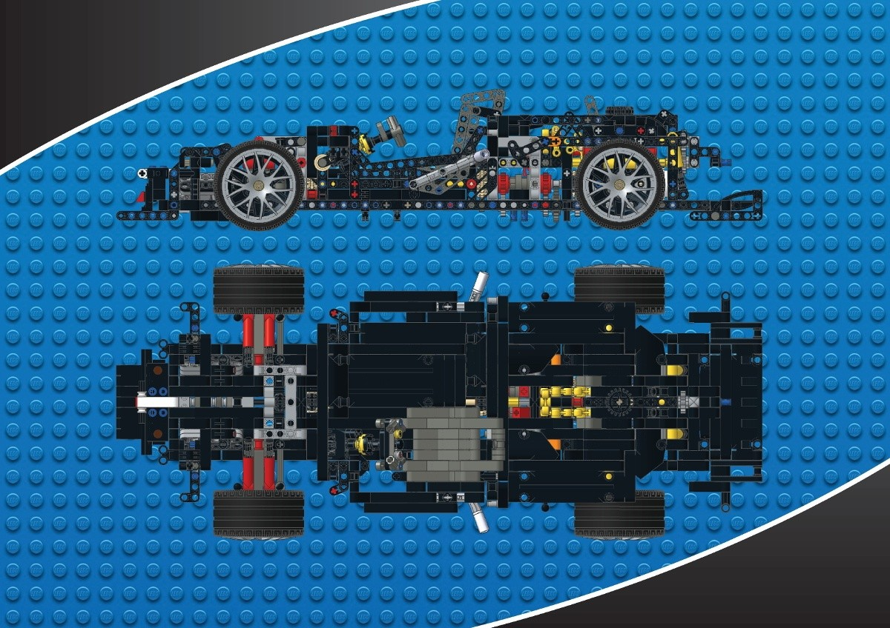
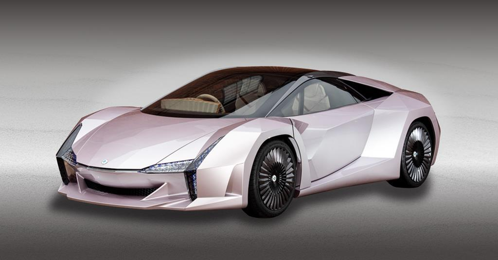

Főoldal
Főoldal Bemutatkozás
Bemutatkozás Érdeklődési kör
Érdeklődési kör Dokumentáció
DokumentációÉrdeklődési köröm
Kicsinek nagyon szerettem legózni, és ez azóta is így maradt. Egyaránt fejből és tervrajzok akalpján is építgettem rengetget. Már akkor elhatároztam, hogy valami hasonlóval szeretnék foglalkozni.

Általános iskolában amikor először megismerkedtem a fizikával, rájöttem, hogy a téma iránti érdeklődésem tényleg komoly, és elhatároztam, hogy mérnök szeretnék lenni.

A mérnöki területen főként a gépi szerkezetek,járművek érdekelnek a legjobban. Az autó ipar is igazán érdekes számomra, szóval ezen területek egyikén szeretnék elhelyezkedni.

Az egyik álmom, hogy építhessek egy exoskeletont.Azért fogott meg ez a téma, mert rendkívül érdekes a működése, valamint számos területen felhasználható, úgy mint a hadászat, orvostudomány, építőipar, hogy említsek néhányat. Ezzel az eszközzel nagyban megkönnyítenénk számos ember életét. Sajnos jelenleg elég drága a megépítése, ezért nem tudott annyira elterjedni még.